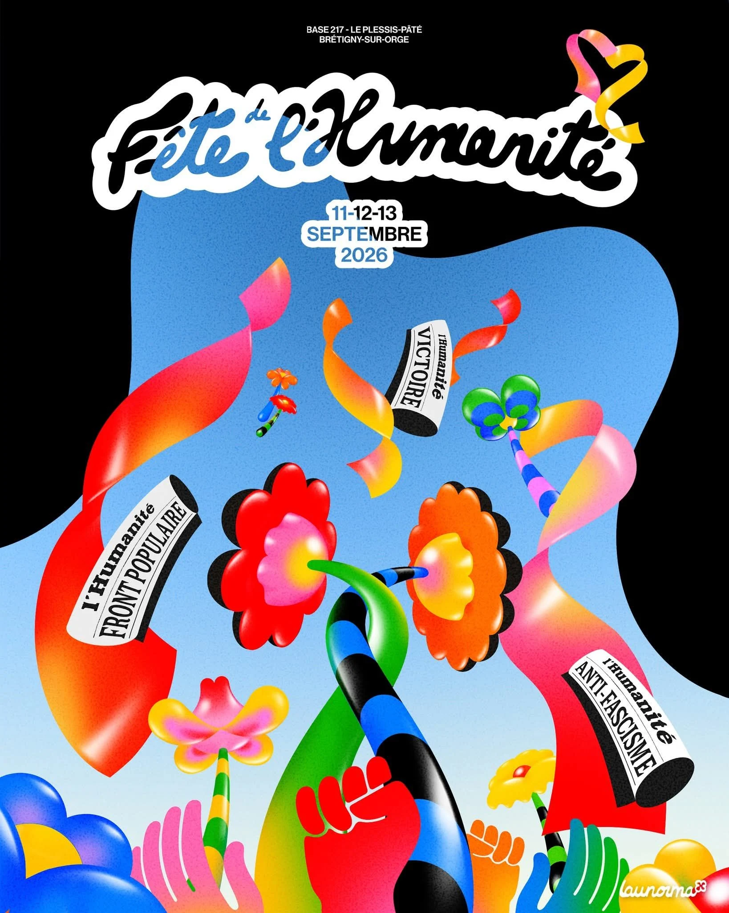

Affiche de la Fête de l’Humanité
La Fête de l’Humanité 2026 à l’affiche de Laura Normand
Date indiquée par Facebook · 24 août 2026
Texte conservé avec la publication
Fête de l’Humanité, affiche réalisée par l’artiste Laura Normand.
🌸 Rendez-vous les 11 • 12 • 13 septembre 2026.
La Fête de l’Humanité, un lieu où tout commence… et où tout peut fleurir.
À travers cette affiche, c’est toute l’essence de la Fête de l’Humanité qui se dévoile.
À la Fête de l’Humanité, rien n’est figé.
Tout circule, tout se partage, tout grandit.
On s’y retrouve, on échange, on débat, on danse.
On sème sans toujours le savoir. Une idée, une rencontre, une émotion. Et de tout cela naît quelque chose de plus grand que nous.
Face aux vagues qui montent, il y a cette force-là.
Celle du collectif. Celle des mains qui se tendent, des voix qui s’élèvent, des idées qui fleurissent.
Depuis toujours, la Fête de l’Humanité porte cette énergie.
C’est un espace où l’on se rassemble, où l’on fait front, où l’on transforme ce que nous sommes en une force commune.
Participer à la Fête, c’est faire partie de ce mouvement.
C’est ajouter sa voix, son histoire, sa présence.
Et continuer, ensemble, à faire grandir ce qui nous unit.
Ce que nous semons ensemble est plus fort que la vague.
#fete #fetedelhumanite
Repères éditoriaux
Nous avons partagé l’affiche réalisée par l’artiste Laura Normand pour les 11, 12 et 13 septembre. Son texte présente la Fête de l’Humanité comme un lieu de rencontres, d’idées et de collectif.

Sources
Archive rouge · export Facebook · AR-0002-FB-00708
À lire aussi · Fête de l’Humanité 2026. « Faire face à la haine, au racisme et à la xénophobie »